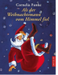

Ein einziger echter Weihnachtsmann ist übrig geblieben, nachdem der Gro?e Weihnachtsrat die Sache mit den Geschenken in die Hand genommen hat. Und dieser einzige echte Weihnachtsmann, Niklas Julebukk, hat eigentlich Berufsverbot. Aber er kummert sich nicht darum. Mit Sternschnuppe, seinem Rentier, einigen Engeln und Weihnachtskobolden sorgt er schon seit Jahren dafur, dass wenigstens noch ein paar Kindern die echten Wunsche erfullt werden; er bringt die Geschenke, die man nicht fur Geld kaufen kann.